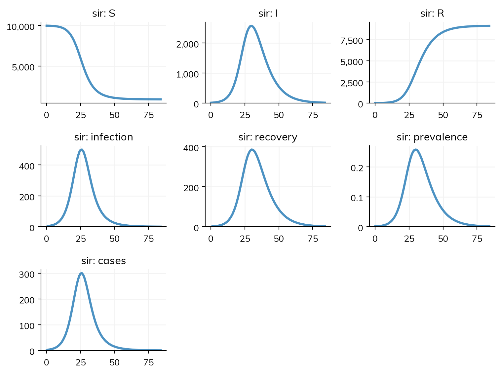

This page is for people who write models in camdl: compartmental models in a checked language, with typed rates and durations, observations and their likelihoods in the model file, and fits by particle filtering, IF2, PMMH, and NUTS from the command line. It shows a camdl model next to the same model in Starsim, how their results agree, how long each takes, and what works and what does not yet, including what fails.
The same model in both
camdl’s SIR: a closed epidemic, observed through weekly reported cases with a negative binomial likelihood:
#' A closed SIR epidemic, observed through weekly reported cases.
time_unit = 'days
compartments { S, I, R }
parameters {
#' transmission rate
beta : rate in [0.05, 1.0] ~ log_normal(mu = -1.0, sigma = 0.5)
#' recovery rate
gamma : rate in [0.01, 0.5] ~ log_normal(mu = -2.0, sigma = 0.5)
#' reporting fraction
rho : probability
#' dispersion of the reported counts
k : positive
}
let N = S + I + R
transitions {
infection : S --> I @ beta * S * I / N
recovery : I --> R @ gamma * I
}
observations {
cases {
columns { time : time, cases : count }
covers = closing_at(time, 7 'days)
projected = incidence(infection)
emit_schedule = every 7 'days
cases ~ neg_binomial(mean = rho * projected, r = k)
}
}
init {
S = 9990
I = 10
}
simulate {
from = 0 'days
to = 12 'weeks
}
In Starsim, parameters carry their bounds and priors, a bare state in a rate is already a share (so beta * I is camdl’s beta * S * I / N, per susceptible), and the observation is an outcome with its likelihood, compared with weekly data as its total over each week:
import starsim as ssbeta = ss.par(ss.perday(0.4), bounds=[0.05, 1.0], prior=ss.lognorm_im(mean=-1.0, sigma=0.5), doc='transmission rate')gamma = ss.par(ss.perday(0.15), bounds=[0.01, 0.5], prior=ss.lognorm_im(mean=-2.0, sigma=0.5), doc='recovery rate')rho = ss.par(0.6, doc='reporting fraction')k = ss.par(10, doc='dispersion of the reported counts')S, I, R = ss.states(3)infection = S >> I @ beta * Irecovery = I >> R @ gammacases = ss.outcome(rho * infection, likelihood=ss.nbinom(n=k)) # Compared with weekly data as its total over each weeksir = ss.Disease(infection, recovery, cases, init_n=dict(I=10))sim = ss.Sim(sir, total_pop=10_000, unit='day', stop=ss.weeks(12), verbose=0)sim.run()sim.plot()
Starsim kernels: Rust, OUT OF DATE (built before its source last changed, so results may be wrong): run "./build" in starsim/solvers/rust/

With data attached (ss.Sim(..., data=...), a table with columns time and cases), sim.fit() fits beta and gamma (a best fit); sim.fit(method='nuts') gives the posterior, or method='pmcmc' with solver='binomial'.
How the results agree
Model
Agreement
The SIR (above)
Agree: as an ODE, compartments and weekly cases within 0.02%; as a chain binomial, the mean of 200 runs within about 1% for I and 1.6% for weekly cases. Fitted by NUTS, the same posterior as camdl’s
An SEIR by 3 ages × 2 patches, with a contact matrix, aging, movement, and vaccination on day 20
Agree: as an ODE, the infectious in every cell within 0.24%, with and without vaccination; stochastic peaks agree in size, and the south’s epidemic rises about a day sooner at a step of a day (less at a quarter-day step)
camdl’s 5-patch polio model with gravity importation and three SIA rounds per patch
Agree: total I peaks at 130,643 on day 145, as in camdl’s ODE and an independent SciPy ODE; total infections over three years are 950,610 without SIAs and 863,920 with them, the same as camdl’s
Fitting the SIR to 12 weeks of cases by particle MCMC
Agree: beta 0.427 (95% from 0.348 to 0.528) against camdl PMMH’s 0.430 (0.348 to 0.523), and gamma 0.152 (0.061 to 0.333) against 0.159 (0.062 to 0.303)
The same, by maximum likelihood (IF2, sim.fit(method='if2'))
Agree: beta 0.474 and gamma 0.235 against camdl IF2’s 0.480 and 0.230; four chains from different starts end within 0.1 of the same log-likelihood
Timings
Lines are lines of model code (not counting blank lines, comments, imports, or plotting, and counting a line over 100 characters twice), against the lines of the .camdl file; times are for one run. Both are measured by Starsim’s north-star script, tests/north_star/north_star.py in the lingua_franca_design repo (see the index page). camdl’s times were recorded on the same machine.
Model
Lines: camdl
Lines: Starsim
One run: camdl
One run: Starsim
The SIR, as an ODE
30
13
0.0093 s as a command (camdl simulate --backend ode)
0.020 s to build and run (0.10 s the first time in a new process); 0.6 ms to rerun a built sim
Pass
The SEIR by age and patch, as an ODE
35 (the pycamdl script; 41 as a .camdl file)
15
0.10 s (pycamdl, with the model built)
0.018 s (0.065 s the first time)
Pass
The SIR fitted by particle MCMC (4 chains)
21 s (PMMH, 200 particles)
79 s (50 particles, chosen in the warm-up)
The SIR fitted by IF2 (4 chains of 50 passes, 1,000 particles)
11.9 s
13 s
The last two rows were measured on 18 October 2026, on a machine shared with other jobs: Starsim’s particle filter took 12 ms per likelihood with 200 particles (on the machine’s threads; 36 ms on one) against camdl’s 10.4 ms.
What works and what does not yet
These are from Starsim’s switching demo for camdl users (tests/switching/test_camdl.py in the lingua_franca_design repo), which checks each task against camdl’s numbers, and from the review it was built from. “Fails” means the demo’s check does not pass today.
Task
Today
The polio model with places as patch= and an explicit contact matrix between them
Works: agreement as above, below
SIAs as one-off moves between states (camdl’s transfer(S -> V))
Works: ss.vaccinate(move=S >> V, at=[...], coverage=...), below. A one-off move is run from Python each step, so the run is taken a step at a time rather than in one call to compiled code
Unit slips that camdl’s checker catches
Works for two of three: a duration used as a rate, and a rate multiplied by a duration (a number with no unit), raise a TypeError before the run. A count where a share was meant (I.n for I) is density-dependent transmission, a model of its own, so it is a note; if it makes the run blow up, the run stops with an error, not with NaN
A posterior by particle MCMC with nothing written but data= and sim.fit(method='pmcmc')
Works: the same posterior as camdl’s PMMH (above)
The speed of the particle filter
Works: 12 ms per likelihood against camdl’s 10.4 ms (above), with the particles shared between threads
Maximum likelihood by IF2
Works: sim.fit(method='if2') gives camdl’s estimates (above), for parameters of the model’s rates; a parameter of how the data are observed (a reporting rate) cannot be fitted by IF2 yet
Profile likelihoods
Works for an ODE: ss.fit.profile(sim, 'beta') refits the other parameters at each value of beta and gives its confidence interval; a stochastic model raises an error, since its noisy likelihoods would need a smoothed profile, which is not yet supported
Import a .camdl file
Works (see below), with every stratification expanded into states, so a stratified model comes in as one state per combination of levels
Interventions in a scenario (SIAs) in an imported model
Not yet: they are listed as not translated
The same model as agents
Works: solver='abm' with a network; camdl is compartmental only
The polio model by hand, with places as patch= and importation as a contact matrix between them, without and with SIAs:
import numpy as nppatches = ['north', 'south', 'east', 'west', 'center']N0 = np.array([150_000, 200_000, 120_000, 100_000, 500_000])R0 = np.array([2.5, 2.2, 1.9, 2.0, 3.0])W = np.array([[0.00, 0.10, 0.05, 0.05, 0.15], [0.10, 0.00, 0.10, 0.05, 0.10], [0.05, 0.10, 0.00, 0.10, 0.10], [0.05, 0.05, 0.10, 0.00, 0.15], [0.15, 0.10, 0.10, 0.15, 0.00]]) # Gravity importation between patchessia_days =dict(north=[180, 545, 910], south=[190, 555, 920], east=[200, 565, 930], west=[200, 565, 930], center=[185, 550, 915])def make_polio(with_sia=False): gamma, kappa =0.1, 0.01 S, E, I, R, V = ss.states(5) seir = ss.Disease( infection = S >> E @ ss.perday(1) * I, progression = E >> I @ ss.perday(0.2), recovery = I >> R @ ss.perday(gamma), waning = V >> S @ ss.perday(0.003), init_n =dict(I=ss.by(patch=[5, 0, 0, 0, 0])), name ='seir', ) seir.stratify(patch=patches, kind='space', split=N0/N0.sum()) sias = [ss.vaccinate(move=S >> V, at=days, coverage=ss.by(patch=[0.8*(q == p) for q in patches]), name=f'sia_{p}') for p, days in sia_days.items()]return ss.Sim(seir, networks=ss.contacts(np.diag(R0*gamma) + kappa*W, dims='patch'), interventions=sias if with_sia elseNone, total_pop=N0.sum(), unit='day', stop=3*365, solver='ode', verbose=0)base = make_polio().run().results.seirsia = make_polio(with_sia=True).run().results.seirprint('Peak:', round(base.I.max()), 'on day', base.I.values.argmax(), '(camdl: 130643 on day 145)')print('Infections without SIAs:', round(base.infection.sum()), '(camdl: 950610)')print('Infections with SIAs:', round(sia.infection.sum()), '(camdl: 863920)')
Peak: 130643 on day 145 (camdl: 130643 on day 145)
Infections without SIAs: 950610 (camdl: 950610)
Infections with SIAs: 863920 (camdl: 863920)
Bringing your model in
ss.import_from('model.camdl', format='camdl') reads a camdl model: a .camdl file is compiled with camdlc (from the PATH, or CAMDLC) into camdl’s JSON intermediate representation, which is what is read; the IR itself and a pycamdl model (through dump_pycamdl.py) can be read too. Each transition becomes a transition, its rate classified by Starsim’s import rules (beta * S * I / N is exposure to I), parameters keep their bounds and priors, and each observation of a flow becomes an outcome with its likelihood. scenario= chooses a scenario’s parameter values. What is not translated (scheduled events and interventions, ODE compartments, forcing functions of time) is listed (sim.imported.incomplete), and sim.imported.prompt is a prompt for an AI assistant with Starsim’s import-model skill to finish the job.
See Import/export for importing in general: checking an import, keeping it as code, and finishing one that is incomplete.
Further reading
camdl: repository: the language, its compiler, and examples of models and fits